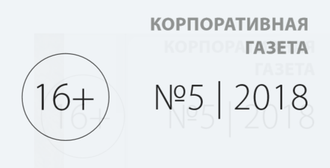
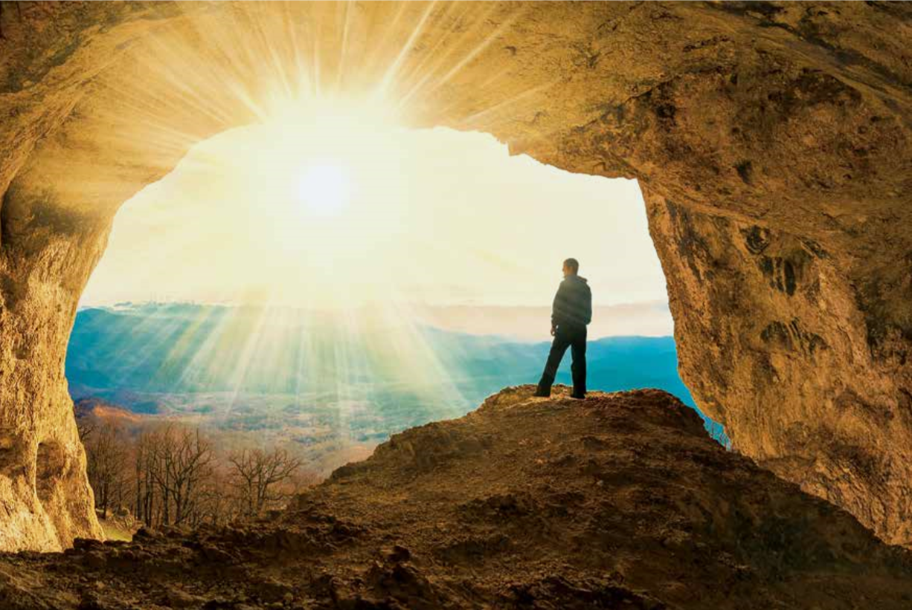

Страсть к
инновациям
Новый виток
к развитию персонала
Честный
разговор
Быть человеком
может каждый
" 
ДОКТРИНА БУДУЩЕГО:
РАДИ НОВЫХ ПОКОЛЕНИЙ
Три года назад Группа компаний «ЛокоТех» разработала Концепцию экологического развития до
2030 года. За документом закрепилось название «Зеленая доктрина», и он стал руководством к
действию для десятков наших предприятий по всей стране. От решения поставленных в концепции
задач в сфере охраны окружающей среды зависит качество жизни в городах и регионах нашего
присутствия не только сегодня, но и в последующие годы, когда нас сменят новые поколения.
" 
ЧЕСТНЫЙ РАЗГОВОР
В ходе специальной
прямой линии каждый
сотрудник ГК «ЛокоТех»
получил возможность
задать свой вопрос
высшему руководству
компании. Мероприятие
проводится ежегодно
с целью поддержания
эффективных коммуни
каций с коллективом.
«Для всех нас очень
важно находиться в тес
ном взаимодействии
друг с другом, для того
чтобы максимально
эффективно решать
те задачи, которые
перед нами ставит наш
основной заказчик –
компания ОАО «РЖД», –
отметил генеральный
директор ООО «Локо
Тех» Юрий Дегтярев. −
В настоящее время
в основе эффектив
ности компании лежит
совершенствование как
внешних, так и внут
ренних коммуникаций,
поскольку именно они
дают максимальные воз
можности для интенсив
ного развития бизнеса».
Руководители
компании по традиции
отвечали на обращения
сотрудников в прямом
эфире. На те вопросы,
которые они не успели
прокомментировать во
время мероприятия,
каждый сотрудник,
который оставил свои
контакты, получит
индивидуальный ответ
по электронной почте.
В этом году пря
мая линия проходила
в новом, максимально
интерактивном форма
те, который позволил
участникам задавать
вопросы с помощью
любого гаджета. Также
можно было обратиться
к спикерам через кол
центр и посредством
специального чата. В об
щей сложности посту
пило более 600 вопро
сов, в том числе около
300 непосредственно во
время трансляции.
ВЛОЖЕНИЯ И РЕЗУЛЬТАТЫ
Зеленая доктрина предусматривает
постоянное снижение воздей
ствия предприятий на окружающую
среду, соблюдение природоохран
ного законодательства и комплекс
дополнительных мер, улучшающих
экологическую ситуацию. Группа
компаний ЛокоТех, представлен
ная в 64 регионах от Калининграда
до Владивостока, обязана быть со
циально ответственной.
Общая стратегия компании
создать эффективную систему
управления природоохранной
деятельностью. Уже сегодня все
вопросы экологической и произ
водственной безопасности реша
ются в рамках отдельной дирек
ции. Распределение полномочий
соответствует практике веду
щих зарубежных и российских
компаний и позволяет избегать
конфликта интересов: стремле
ние к экономическому росту не
должно являться оправданием
для нарушения природоохран
ных норм.
За три года ГК ЛокоТех за
метно увеличила финансирование
экологических проектов. Если
в 2015 году зеленые инвестиции
составляли 250 млн руб., то
в 2017-м превысили 400 млн руб.
По итогам прошлого года вы
бросы загрязняющих веществ
в атмосферу от наших предприятий
снизились на 7% для компании
такого масштаба это очень значи
тельная цифра. Экологи провели
мониторинг источников образова
ния отходов и оценили состояние
объектов по очистке сточных вод
и воздуха на всех производствен
ных площадках, регулярно прово
дится анализ наилучших доступных
технологий. При выборе экологи
ческих технологий ГК ЛокоТех
ориентируется в первую очередь
на достижения российских ученых.
Свои услуги предлагают европей
ские и японские компании будем
выбирать лучшее и вкладывать
деньги с умом